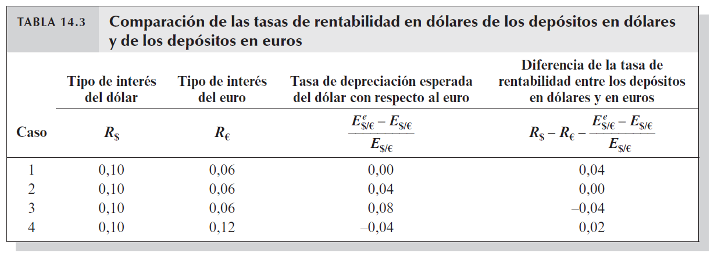
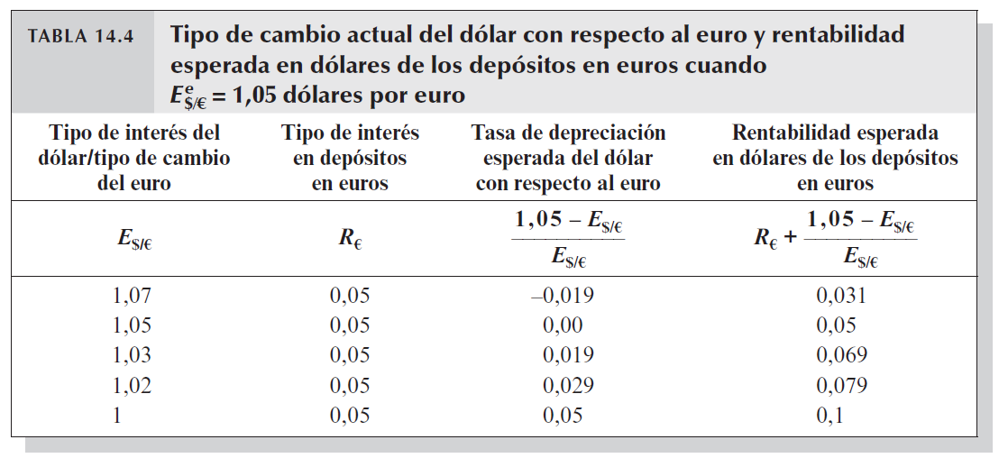
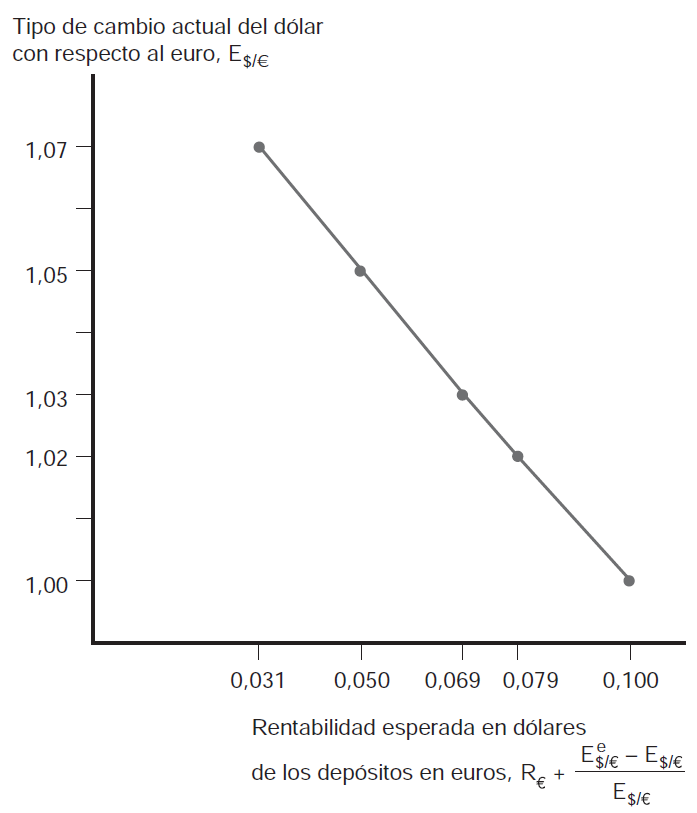
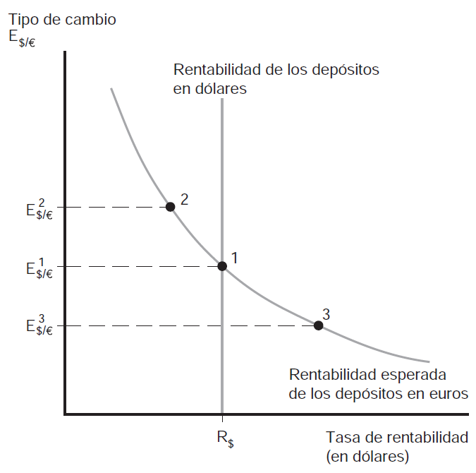
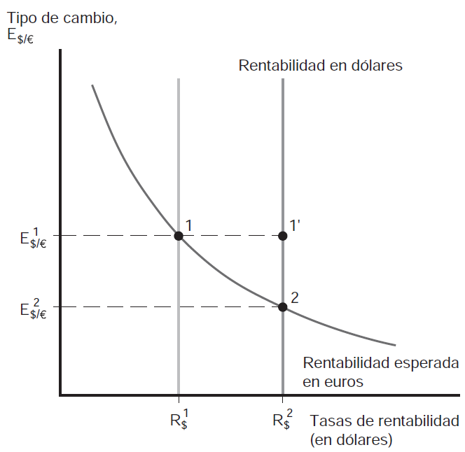
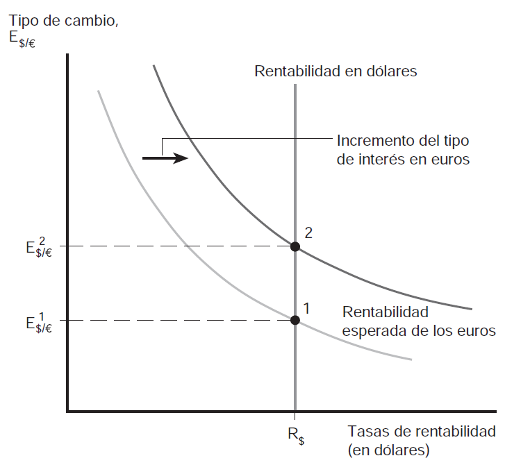

Tipos de cambio y mercado de divisas
Tipo de cambio y rentabilidad de los activos
- Las tasas de interés ofrecidos por depositos (activos) en pesos y en reales nos dicen cómo variará su valor en pesos o en reales
- Pero para saber qué nos conviene como inversores, debemos además tener en cuenta el tipo de cambio –o mejor dicho, la variación del tipo de cambio
- En otras palabras, lo que queremos saber es si utilizamos pesos para adquidir un activo en reales cuántos pesos tendremos al cabo de un año
Tipo de cambio y rentabilidad de los activos (cont.)
De esta manera estamos calculando y comparando correctamente. Habremos calculado la tasa de rentabilidad en pesos de un depósito bancario en reales. Es decir, habremos comparado el precio en pesos de hoy con su precio en pesos dentro de un año
Tipo de cambio y rentabilidad de los activos (cont.)
- Supongamos dos depósitos, uno en pesos al \(10%\) anual, uno en reales al \(5%\) anual.
- Suponemos además que el tipo de cambio hoy es de \(1.10\) (pesos por real) y se prevee que será \(1.165\) (pesos por real) de acá a un año
- ¿Qué inversión será la más rentable?
Tipo de cambio y rentabilidad de los activos (cont.)
- Precio en pesos de un deposito en reales es igual a \(1.1\) [HOY]
- Deposito en reales valdrá \(1.05\) euros [MAÑANA]
- Precio en pesos de un deposito en reales es igual a \(1.223\) dólares [MAÑANA]
- Tasa de rentabilidad de depósito en reales igual a \(11%\) y tasa de rentabilidad de depósito en pesos igual a \(10%\)
- La inversión más rentable consisten en depositar en euros
Tipo de cambio y rentabilidad de los activos (cont.)
- Hay una regla sencilla que podemos usar para abreviar todos estos pasos. Primero definimos la tasa de depreciación del dólar respecto al euro como el incremento porcentual del tipo de cambio del dólar en relación con el euro durante un año
- i.e. en el ejemplo anterior sería \(\frac{(1,165-1,10)}{1,10}=0,059\)
La tasa de rentabilidad en dólares de los depósitos en euros es aproximadamente el tipo de interés del euro más la tasa de depreciación del dólar con respecto al mismo
Tipo de cambio y rentabilidad de los activos (cont.)
- Podemos poner esto en formato de ecuación:
\[\begin{equation}
R_{$}=R_{re}+\frac{(E^{e}_{$,re}-E_{$,re})}{E_{$,re}}
\end{equation}\]
- donde \(R_{re}\) es el tipo de interés actual aplicado a los depósitos en euros; \(E_{\$,re}\) es el tipo de cambio actual (precio de los euros en términos de dólares); y \(E^{e}_{\$,re}\) es el tipo de cambio del dólar con respecto al euro que se espera esté vigente al cabo de un año
Tipo de cambio y rentabilidad de los activos (cont.)
- El lado izquierdo es la rentabilidad (en dólares) de los depósitos denominados en dólares y el lado derecho es la rentabilidad (en dólares) de los depósitos denominados en euros. Podemos también expresarlo:
\[\begin{equation}
R_{$}-\left[R_{re}+\frac{(E^{e}_{$,re}-E_{$,re})}{E_{$,re}}\right]=R_{$}-R_{re}-\frac{(E^{e}_{$,re}-E_{$,re})}{E_{$,re}}
\end{equation}\]
- si esta diferencia es positiva entonces los depósitos denominados en dólares ofrecen la tasa de rentabilidad más elevada; si la diferencia es negativa entonces los depósitos denominados en euros dan la tasa de rentabilidad más elevada
Tipo de cambio y rentabilidad de los activos (cont.)
Comparación de tasas de rentabilidad
Equilibrio en el mercado de divisas
- Nos interesa conocer cómo se determinan los tipos de cambio en el mercado \(\longrightarrow\) suponemos dado por ahora el tipo de cambio futuro esperado, \(E^{e}_{\$,re}\)
Equilibrio en el mercado de divisas. El mercado cambiario se encuentra en equilibrio cuando los depósitos de todas las divisas ofrecen la misma tasa de rentabilidad esperada.
- esta condición se denomina condición de paridad de intereses [¿por qué? ¿qué pasaría si las rentabilidades fueran diferentes?]
Equilibrio en el mercado de divisas (cont.)
- En otras palabras, el equilibrio se da cuando desaparecen los excesos de oferta y excesos de demanda de depósitos en diferentes monedas
- suponga que el tipo de interés de un activo denominado en dólares es del \(10%\), el tipo de interés de un activo denominado en euros es del \(6%\), y se espera una devaluación del dólar del \(8%\)
- nadie querrá mantener activos en dólares (exceso de oferta de depósitos en dólares) y todos querrán mantener activos en euros (exceso de demanda de depósitos en euros)
- Recuerde que las tasas de rentabilidad esperada son iguales cuando \(R_{\$}=R_{re}+\frac{(E^{e}_{\$,re}-E_{\$,re})}{E_{\$,re}}\)
Equilibrio en el mercado de divisas (cont.)
Mecanismo de ajuste. De la ecuación de la paridad de intereses se deduce que cuando los depósitos en dólares ofrecen una rentabilidad mayor a los depósitos en euros, el dólar se aprecia con respecto al euro dado que los inversores se deshacen de sus depósitos en euros (ofrecen más euros) y los convierten a depósitos en dólares (demandan más dolares)
- esta es la forma e intuición correcta de interpretar esta ecuación y condición
Variación del tipo de cambio y rentabilidad esperada
- Recordemos el supuesto de que el tipo de cambio futuro esperado, si la moneda local (dólar) se deprecia esto implica que el rendimiento esperado de los depósitos en divisas disminuye; la apreciación de la moneda local aumenta el rendimiento esperado de los depósitos en divisas
- Ejemplo \(\longrightarrow\) suponga que dado un tipo de cambio futuro esperado de \(1.05\), el tipo de cambio actual pasa de \(1.00\) a \(1.03\); según la fórmula la tasa de depreciación del dólar será de \(1.9\%\) y no de \(5\%\);
- si la tasa de interés de los depósitos en euros no cambia entonces la tasa de depreciación de la moneda local se ha reducido
- por lo que esto reduce el rendimiento esperado de los depósitos en euros!
Variación del tipo de cambio y rentabilidad esperada (cont.)
Tasas de depreciación y tasas de rentabilidad
Variación del tipo de cambio y rentabilidad esperada (cont.)
¿Contraintuitivo? Puede parecer contraintuitivo. Pero piense en lo que está pasando. Estamos suponiendo dadas el tipo de cambio futuro esperado y la tasa de interés de los depósitos en euros, en ese caso una depreciación (repentina) de la moneda local implica que el dólar ahora necesita depreciarse menos para alcanzar un nivel dado de rentabilidad esperada en el futuro.
- En otras palabras, una depreciación presente del dolar que no afecte el valor del tipo de cambio futuro esperado ni la tasa de interés de los depósitos en euros \(\longrightarrow\) hace que los depósitos en euros se vuelvan menos atractivos
Variación del tipo de cambio y rentabilidad esperada (cont.)
Tipo de cambio actual y rentabilidad esperada
Tipo de cambio de equilibrio
- Spoiler \(\longrightarrow\) los tipos de cambio siempre se ajustarán de forma que se cumpla la condición de la paridad de intereses
- continuamos con supuestos anteriores (tipo de cambio futuro esperado y tasas de interés externa dados)
- La figura siguiente muestra el esquema gráfico usado para entender la determinación del tipo de cambio de equilibrio
Tipo de cambio de equilibrio (cont.)
Tipo de cambio actual y rentabilidad esperada
Tipo de cambio de equilibrio (cont.)
- Recta vertical \(\longrightarrow\) representa rentabilidad de depósitos en dólares (para una \(R_{\$}\) dada)
- Función de pendiente negativa \(\longrightarrow\) relación entre rentabilidad (en dólares) esperada de depósitos en euros y el tipo de cambio del dolar respecto del euro
- En el equilibrio, \(E_{\$,e}^{1}\) dado en el punto 1 se cumple la condición de la paridad de intereses
- ¿qué pasaría si el tipo de cambio estuviera en punto 2? rentabilidad de depósitos en euros sería menor a la de depósitos en dólares \(\longrightarrow\) agentes vendes euros y compras dolares \(\longrightarrow\) apreciación del dolar (cae el tipo de cambio)
Tipo de interés, expectativas y equilibrio
- Podemos preguntarnos cómo cambia el equilibrio cuando cambian: a) el tipo de interés; b) las expectativas sobre el futuro
- Variaciones del tipo de interés local \(\longrightarrow\) en diarios y redes se suele leer “EEUU sube el tipo de interés y el dólar se fortalece” –un aumento del tipo de interés local provoca una apreciación del dolar [¿mecanismo?]
- Variaciones del tipo de interés extranjero \(\longrightarrow\) un aumento del tipo de interés extranjero provoca que se desplaze la curva de pendiente negativa a la derecha –depreciación del dólar
- De esta manera pueden comprenderse los mecanismos que se activan cuando hay variaciones de algunas variables claves
Tipo de interés, expectativas y equilibrio (cont.)
Cambios en el tipo de interés local
Tipo de interés, expectativas y equilibrio (cont.)
Cambios en el tipo de interés extranjero